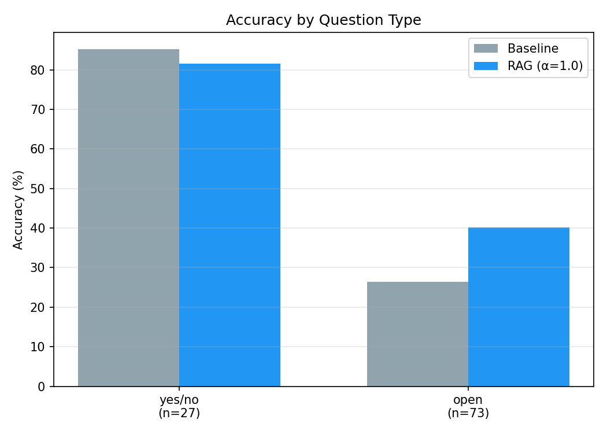

Model sees one image + question.
Must answer from internal weights alone.
No access to prior examples or similar cases.
Hard questions about rare objects, unusual angles, or uncommon answers may never appear in training distribution. The model has no fallback.
Model retrieves similar past VQA examples
from a visual memory before answering.
Uses retrieved Q&A pairs as contextual hints.
Key question: can a frozen VQA model answer better if it can look up visually similar past examples?
Goal: improve a frozen model at inference time using retrieval — no fine-tuning required for the main result.
Finds similar questions.
Ignores visual content.
Image + text equally weighted.
Finds visually similar images.
Achieves 59.33%.
Skips retrieval if top-1 similarity is below threshold.
| Configuration | α | Accuracy | Δ baseline |
|---|---|---|---|
| Baseline (BLIP-2, frozen, no retrieval) | — | 42.33% | — |
| RAG text-only retrieval | 0.0 | 43.67% | +1.34 |
| RAG balanced (image + text) | 0.5 | 46.67% | +4.34 |
| ★ RAG image-only · 20k diverse KB | 1.0 | 59.33% | +17.00 |
| ★★ + Type-conditional router (final system) | 1.0 | 60.33% | +18.00 |
Example: "Is the grass green?" — an image of a park retrieves other park images. Retrieved answers include "yes" and "green" — directly helpful.
Example: "What color is the car?" text-retrieval finds other color questions — but about completely different cars. The retrieved answers are noise.
blueblue.match function differs across the three regimes.
"hat" from spuriously matching inside "chat". SUBSTR is the looser variant without that guardrail — included as the upper bound only.
p = "Watching the skateboarder" → norm(p) = "watching the skateboarder"G include "watching" · "watching skater" · "looking" · …"watching the skateboarder" == "watching" → FALSE"watching" appears as a whole word in the prediction → TRUEstrict ⇒ lenient ⇒ substr — the rules get weaker, so per-question accuracy can only stay the same or go up. Therefore overall accuracy under each regime satisfies strict ≤ lenient ≤ substr.
+17.00 strict → +1.00 lenient collapse isn't a contradiction — it's an interval bounding where the true semantic improvement lives. The lower end (+1) is the conservative estimate; the upper end (+18) is the form-effect-inflated number. Honest reporting requires showing both.
norm(p) == norm(g). The normalized prediction must equal the normalized annotator answer character-for-character.p="watching" against g="watching" → ✓.p="watching the skateboarder" against g="watching" → ✗ (different strings, even though semantically right). Also misses synonyms ("gelato" vs "ice cream") and any verbose paraphrase.\b…\b).p="watching the skateboarder" against g="watching" → ✓ (the word "watching" appears with both boundaries clean). p="riding a bike" against g="bike" → ✓."the skateboarder is watching" only matches if "watching" appears as a token — fine here, but reordered noun phrases like "a yellow ripe banana" vs "ripe yellow banana" can fail). Also misses true synonyms (gelato ↔ ice cream)."hat"-inside-"chat" false-positive. Without it, p="chat" would falsely match g="hat".norm(g) in norm(p) — the annotator answer appears anywhere in the prediction, with or without word boundaries.p="redhead" against g="red".p="chat" against g="hat" → ✓ (incorrectly!). p="grandmother" against g="mother" → ✓. SUBSTR over-credits any prediction whose characters happen to contain the GT.baseline ≈ 66% and RAG ≈ 68%, then the gap is at most ~2 points under any reasonable semantic check.
strict +17 · lenient +1 · substr +2. STRICT inflates the gain by penalising baseline's verbosity. LENIENT and SUBSTR agree closely on the *real* gain (~+1 to +2) — meaning the +16 collapse from STRICT is robust, not a fluke of one relaxation.
| Mode | STRICT | LENIENT | SUBSTR |
|---|---|---|---|
| Baseline (frozen) | 42.33% | 65.00% | 66.00% |
| RAG k=3 (headline) | 59.33% | 66.00% | 68.00% |
| ★ Type-cond gate | 60.33% | 68.00% | 70.00% |

Model already strong. Context adds noise.
+13.7 pts — main driver of total gain
| Knowledge base | Unique images | Accuracy | Δ baseline |
|---|---|---|---|
| Baseline (no retrieval) | — | 42.33% | — |
| 5k validation-built KB | ~850 (leaky) | 51.33% | +9.00 |
| 5k diverse (image-id-disjoint) | 5,000 | 54.67% | +12.34 |
| ★ 20k diverse | 20,000 | 59.33% | +17.00 |
| Mode | Yes/No (n=27) | Open (n=73) | Overall |
|---|---|---|---|
| Baseline | 82.86% | 20.51% | 42.33% |
| RAG (k=3, α=1.0) | 80.00% | 48.21% | 59.33% |
| ★ Type-cond. gate | 82.86% | 48.21% | 60.33% |
| Configuration | Acc | Δ vs k=3 |
|---|---|---|
| RAG · α=1.0 · k=1 | 53.67% | −5.67 |
| RAG · α=1.0 · k=5 | 59.33% | ±0.00 |
| RAG · α=1.0 · k=10 | 59.33% | ±0.00 |
| RAG · α=0.5 · k=3 | 46.67% | −12.67 |
| RAG · α=0.0 · k=3 | 43.67% | −15.67 |
| + cross-encoder rerank | 57.33% | −2.00 |
| + evidence-aware selector | 56.00% | −3.33 |
| Self-consistency vote (3 α) | 49.67% | −9.67 |
| k | Clean 20k | Legacy 5k (leaky) |
|---|---|---|
| 1 | 6.00% | 24.00% |
| 3 | 24.00% | 60.33% |
| 5 | 36.00% | 83.33% |
| 10 | 46.00% | 92.33% |
| Category | Count | % wrong |
|---|---|---|
| retrieval_then_lm (GT retrieved, model picked it) | 18 | — |
| generator_smart (no retrieval needed) | 37 | — |
| generator_failure (model ignored evidence) | 6 | 13.3% |
| retrieval_failure (GT not in top-3) | 39 | 86.7% |